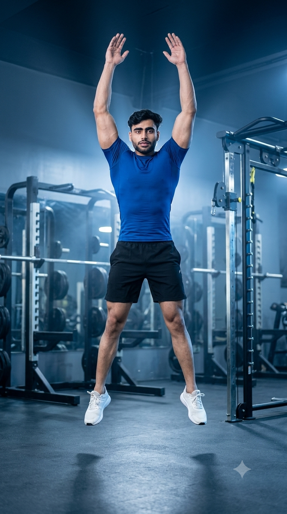

Primary Muscles
Full Body
Build Full-Body Strength, Explosive Power, Endurance & Cardiovascular Fitness
Burpees are a powerful full-body bodyweight exercise that combines a squat, plank, push-up, and explosive jump into one continuous movement. They strengthen the chest, shoulders, arms, core, glutes, quadriceps, hamstrings, and calves while rapidly elevating your heart rate to improve cardiovascular fitness, muscular endurance, and calorie expenditure. Whether you're training for fat loss, athletic performance, HIIT workouts, military fitness, or general conditioning, Burpees deliver an efficient total-body workout without requiring any equipment.

Full Body
Bodyweight
Intermediate
Full-Body Plyometric Exercise
Discover the primary and supporting muscles activated during Burpees. This explosive full-body exercise develops strength, muscular endurance, cardiovascular fitness, and coordination by engaging multiple muscle groups simultaneously throughout every phase of the movement.
The quadriceps and glutes generate force during the squat and explosive jump, while the core stabilizes the spine and transfers power efficiently throughout every phase of the Burpee.
These muscles control the lowering and pushing phases from the floor, helping generate upper-body strength and stability during each repetition.
The hamstrings assist hip extension while the calves provide explosive push-off during the jump and help absorb landing forces with each repetition.
The spinal erectors and hip stabilizers maintain proper posture, improve balance, and protect the lower back during rapid transitions between standing, plank, and jumping positions.
Discover how Burpees improve cardiovascular fitness, develop full-body strength, increase calorie expenditure, enhance muscular endurance, and build explosive athletic power through one of the most effective bodyweight conditioning exercises.
Burpees rapidly elevate your heart rate, strengthening the cardiovascular system while improving aerobic capacity, stamina, and overall endurance during high-intensity activities.
As a high-intensity compound exercise, Burpees require substantial energy expenditure, making them highly effective for calorie burning, fat-loss programs, and metabolic conditioning.
The explosive jump trains the lower body to generate force quickly, improving power, speed, agility, and athletic performance across many sports.
Burpees simultaneously engage the chest, shoulders, arms, core, glutes, and legs, helping build functional strength and muscular endurance with every repetition.
Burpees rely solely on body weight, making them a convenient exercise for home workouts, travel, outdoor training, and situations where equipment is unavailable.
By combining strength, coordination, mobility, and cardiovascular training into one movement, Burpees improve overall fitness and prepare the body for demanding daily and athletic activities.
Follow these step-by-step instructions to perform Burpees with proper technique. Focus on controlled movement, core stability, smooth transitions, and an explosive jump to maximize strength, conditioning, and cardiovascular benefits while reducing injury risk.
Stand with your feet about shoulder-width apart, chest lifted, core engaged, and arms relaxed by your sides. Maintain an upright posture before beginning the movement.
Brace your core before moving to improve stability throughout the exercise.
Push your hips back into a squat and place your palms firmly on the floor directly beneath your shoulders. Keep your back neutral and avoid rounding your spine.
Shift your weight smoothly onto your hands before extending your legs backward.
Jump both feet backward to achieve a straight-body plank. Keep your shoulders over your wrists, engage your core, and maintain a straight line from your head to your heels. Perform a push-up here if your variation includes one.
Avoid letting your hips sag or rise excessively during the plank position.
Jump your feet back underneath your hips, immediately drive through your legs, and perform an explosive vertical jump while extending your hips, knees, and ankles. Reach your arms overhead at the top of the jump.
Generate power from your legs instead of relying on momentum from your upper body.
Land softly with slightly bent knees to absorb impact, regain balance, and immediately begin the next repetition while maintaining a consistent rhythm and controlled breathing.
Prioritize perfect technique over speed to improve performance and reduce injury risk.
Avoid these common Burpee mistakes to improve movement efficiency, maximize strength and cardiovascular benefits, and reduce unnecessary stress on your wrists, shoulders, knees, and lower back. Proper technique helps you perform every repetition safely and effectively.
Allowing your hips to drop during the plank or push-up places excessive stress on the lumbar spine and reduces core stability throughout the movement.
Keep your core braced and maintain a straight line from your head to your heels during the plank phase.
Landing with locked knees increases impact forces on the ankles, knees, and hips while reducing shock absorption.
Land softly with slightly bent knees and absorb the impact before beginning the next repetition.
Performing Burpees too quickly often leads to poor form, incomplete repetitions, and reduced muscle activation, increasing the risk of injury.
Focus on controlled, technically sound repetitions before increasing your speed or workout intensity.
Inconsistent breathing causes early fatigue and reduces endurance, making it difficult to maintain power and movement quality throughout the set.
Maintain a steady breathing pattern by inhaling during the lowering phase and exhaling as you jump explosively upward.
Follow these expert coaching tips to improve your Burpee technique, generate more explosive power, maintain proper body alignment, and complete every repetition safely and efficiently while building strength and cardiovascular endurance.
Keep your abdominal muscles engaged during every phase of the Burpee to stabilize your spine, improve force transfer, and protect your lower back during rapid transitions.
Tight core, stronger movement.
Transition efficiently from the squat to the plank and back to standing without unnecessary pauses. Smooth movement conserves energy and improves conditioning.
Flow, don't rush.
Drive forcefully through your legs and extend your hips completely during the jump to develop explosive power, athletic performance, and lower-body strength.
Explode upward every rep.
Master controlled repetitions before increasing your workout pace. Excellent technique improves performance, reduces injury risk, and allows long-term progress.
Quality always beats speed.
Progress from learning the basic Burpee movement to performing advanced variations by gradually improving technique, strength, endurance, and explosive power. A structured progression helps maximize performance while reducing injury risk.
Learn the squat, plank, standing, and jump sequence with controlled movement. Focus on posture, smooth transitions, and proper body alignment before increasing speed.
Technique, coordination, movement quality, and core stability.
Perform longer sets while maintaining consistent form and controlled breathing to improve muscular endurance and cardiovascular fitness.
Work capacity, endurance, and movement consistency.
Progress to full Burpees with push-ups, tuck jumps, or higher vertical jumps to increase upper-body strength, power, and athletic performance.
Strength, explosive power, and full-body coordination.
Use Burpees in high-intensity interval training by combining timed work and recovery periods to maximize calorie burn, cardiovascular conditioning, and athletic performance.
Maximum conditioning, fat loss, endurance, and power output.
Find answers to the most common questions about Burpees, including muscles worked, weight-loss benefits, workout frequency, beginner recommendations, and how to perform the exercise safely for maximum strength and conditioning results.
Burpees are a full-body exercise that primarily target the quadriceps, glutes, and core while also engaging the chest, shoulders, triceps, hamstrings, calves, and hip stabilizers throughout the movement.
Yes. Beginners should first learn the basic movement pattern at a controlled pace. If necessary, they can remove the push-up or jump until strength, mobility, and endurance improve.
Yes. Burpees burn a significant number of calories by combining strength and cardiovascular training. They are highly effective for fat loss when combined with a nutritious diet and consistent exercise program.
Beginners can start with 5 to 10 repetitions per set, while intermediate and advanced individuals may perform 10 to 20 repetitions or include Burpees in timed HIIT intervals depending on their fitness goals.
No. Burpees are a bodyweight exercise that requires no equipment, making them ideal for home workouts, outdoor training, travel, and high-intensity fitness programs.
Most people can perform Burpees two to four times per week as part of a strength, conditioning, or HIIT program. Allow adequate recovery between intense sessions to support performance and reduce fatigue.
Build greater strength, endurance, explosive power, and cardiovascular fitness by combining Burpees with these complementary bodyweight and cardio exercises. Together they create a complete conditioning program suitable for all fitness levels.


Continue building your endurance, burning calories, and improving cardiovascular health with our complete collection of cardio exercise guides. Learn proper technique, muscles worked, training tips, common mistakes, and progression strategies for every fitness level.